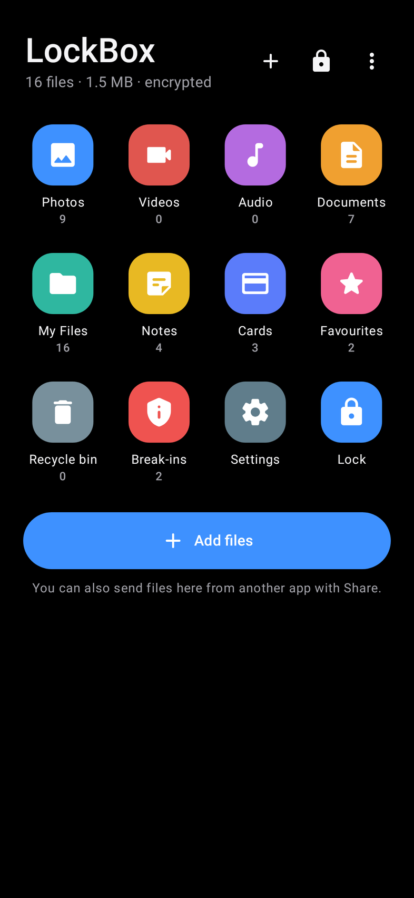
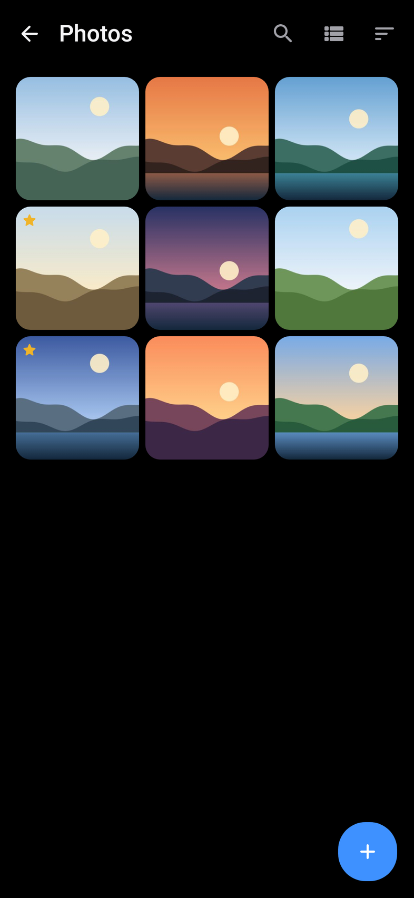
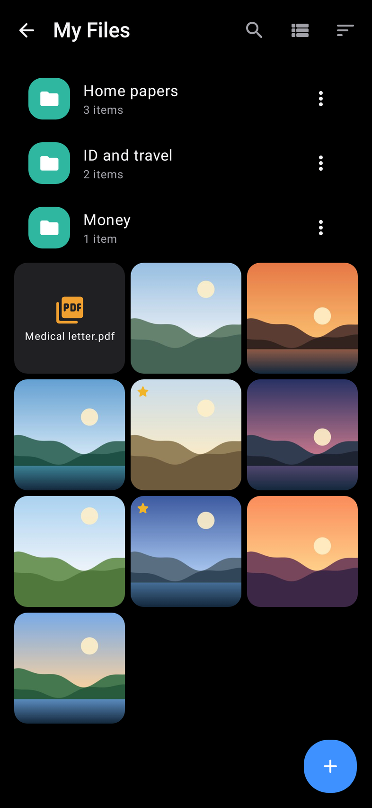
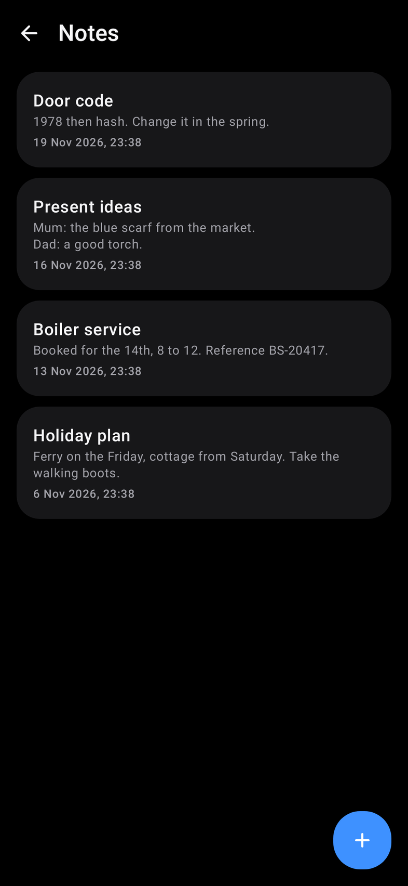
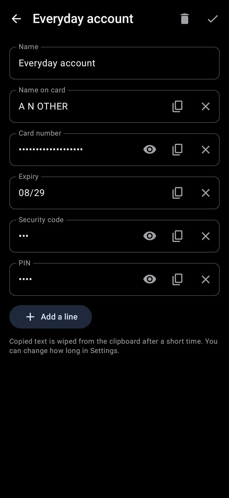
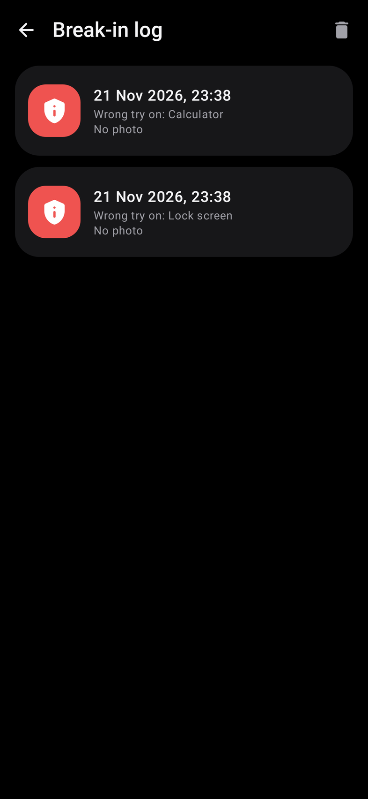
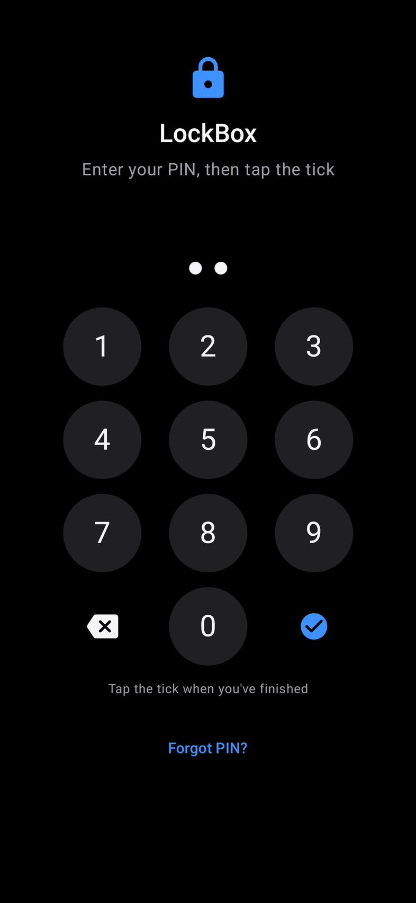
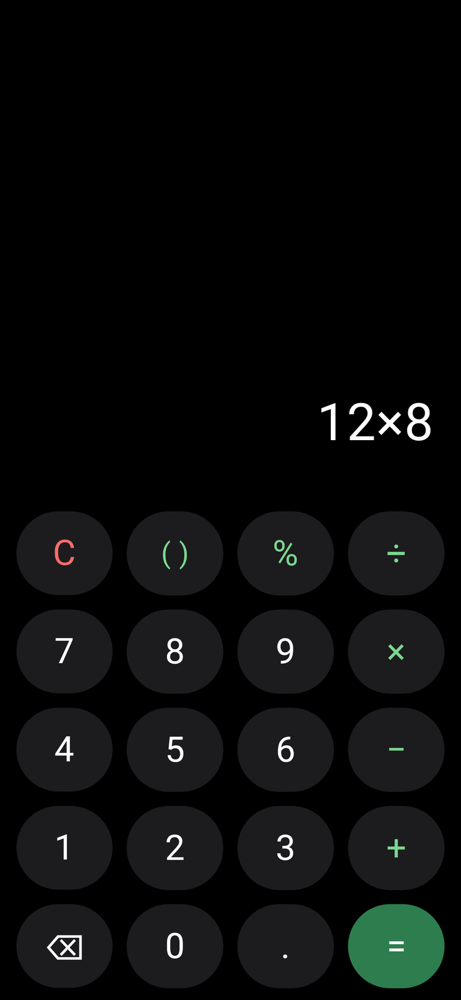

A private folder that only you can open.
LockBox is an Android app that keeps photos, videos, documents, notes and card details in one folder, encrypted on your phone. Without your PIN or password the contents cannot be read: not by another app, not by someone who takes the phone, and not by anyone who copies its storage.
It is free, with no adverts and nothing to unlock. And it cannot go online: LockBox has no internet permission, so nothing in it can be sent anywhere.
Download for AndroidHow to install
- Version 1.0
- Android 10 or later
- 5.8 MB
Free, with nothing to unlock. No adverts, no account with the developer, no tracking. Compare or read the release notes.
Chrome may say the file might be harmful. It shows this for app files that do not come from Google Play. Choose Download anyway.

- No subscriptionEvery feature is in the free app.
- No advertsNone in the app and none on this site.
- No accountThere is nothing to sign up to.
- No internetIt has no permission to go online.
A look inside
These are the real screens, drawn from the app's own code with made-up photos, files, notes and cards. Swipe or scroll sideways to see them all.







How it works
Your phone's screen lock guards the front door. LockBox is a strongroom inside: what you put in it stays scrambled until you open it yourself.
Choose how to unlock
Pick a password or a PIN, add your fingerprint if you like, and write down the recovery code LockBox shows you. It is shown once.
Add your files
Tap Add files, or use Share from another app. Each file is encrypted, read back and checked, and only then is the original removed.
Make a backup file
One encrypted file with its own password, kept somewhere other than the phone. It is your only spare copy.
Everything is in, and all of it is free
Nothing below is held back for a paid tier, because there is no paid tier.
Keeping
- Photos, videos, audio and documents
- Any kind of file, each encrypted with AES-256-GCM and its own key. Names, folders, tags and previews are encrypted too.
- Notes and cards
- Encrypted notes, and cards for logins, bank cards, ID details and Wi-Fi passwords, with hidden values and a clipboard that clears itself.
- Viewers built in
- Photos, videos, audio, PDFs and text open inside LockBox, decrypted only as you look.
- Folders, tags and search
- Folders inside folders, tags, favourites, sorting, search, and a recycle bin that keeps deleted files for 30 days.
Locking
- Unlock your way
- A PIN of 4 to 12 digits or a password, with fingerprint on top if you want it. LockBox tells you plainly which is strongest.
- Locks itself
- When the screen turns off and after a chosen time without a touch. A quick-panel tile, a home-screen button, face down or a shake lock it too.
- Wrong tries are slowed and logged
- After five wrong tries the waits begin and grow. Every wrong try is logged with the time. A front-camera photo and delete-everything are optional, and off until you turn them on.
- Calculator disguise
- LockBox can sit on your home screen as a real, working calculator. Type your PIN and press = to open the vault.
Read this first
- Uninstalling LockBox deletes everything in it
- Your files live inside the app and nowhere else. Updating is safe: install the new version over the old one and never uninstall first.
- Keep a backup file off the phone
- Settings, Back up and restore makes one encrypted file with its own password. The phone's own backup leaves LockBox out on purpose.
- Nobody can reset your PIN or password
- There is no account and no email reset. Write the 20-character recovery code on paper. Without it, a forgotten PIN means the contents are gone for good.
- Other copies are not touched
- Copies already in a cloud photo service or the gallery's recycle bin stay there until you delete them yourself.
Nothing in it can leave your phone
No internet permission
Android shows this in the app's permissions. LockBox has no way to send anything anywhere.
Two locks on the key
The key that opens the vault is locked with your PIN or password, and again with a key held in the phone's security hardware.
Nothing to capture
Screenshots and the recent-apps preview are blocked, and LockBox is left out of the phone's cloud backup.
Installing and updating
LockBox is not on Google Play, so your phone asks a couple of extra questions the first time.
Download the app file
Tap Download on your phone. The file is called LockBox.apk and is about 5.8 MB. If Chrome says the file might be harmful, choose Download anyway.
Allow the install
Open the file. The first time, Android asks you to allow your browser to install apps. Allow it, go back and tap Install. If Google Play Protect steps in, choose More details, then Install anyway.
Updating later
LockBox tells you when a newer version is out. Install the new file over the old one and everything you have saved is kept.
Version 1.0, released 18 November 2026. See the release notes, or check your download.
Questions
Is LockBox really free?
Yes. There is no paid version, no subscription and no adverts, and nothing in the app is locked away.
Is LockBox on Google Play?
No. LockBox is a personal project and is downloaded from this site as an Android app file. It needs Android 10 or later.
What happens if I uninstall it?
Everything in LockBox is deleted. The files are stored inside the app, so uninstalling it, or clearing its storage in the phone's settings, removes them for good. Make a backup file first. Installing an update over the top is safe and keeps everything.
What if I forget my PIN or password?
On the lock screen tap Forgot PIN? or Forgot password? and type the recovery code you wrote down at setup. You are then asked to choose a new PIN or password. If you have lost the recovery code as well, there is no way in. Nobody, including the developer, can open it for you.
Is backing up safe?
Yes. The backup is encrypted on your phone, with a password you choose, before it is saved anywhere. Whoever stores the file sees only scrambled data. It is exactly as strong as that password, so make it long, and do not lose it: a forgotten backup password cannot be recovered.
How do I move to a new phone?
Make a backup file on the old phone and copy it to the new one. Install LockBox on the new phone and choose Restore from a backup file on its first screen. The phone's own transfer tools do not copy LockBox.
Does anything leave my phone?
No, and it cannot. LockBox does not have Android's internet permission, so it has no way to send anything anywhere. You can check this yourself: open LockBox's App info in your phone's settings and look at its permissions.
How do I get back in when it is disguised as a calculator?
If you unlock with a PIN, type the PIN on the calculator and press =. If you unlock with a password, hold = for three seconds and the lock screen appears. Holding = works for PIN users too. The reminder is kept in Settings and in Help inside the app.
Why do I have to tap a tick after my PIN?
A PIN can be anything from 4 to 12 digits, and LockBox does not record how long yours is, so it waits for the tick before checking.
Can I put apps inside it, like the secure folder on a Samsung phone?
No. A phone maker can do that because its secure folder is part of the phone's own system. An ordinary app cannot wrap other apps in its encryption, so any apps “inside” would only be hidden, not protected. LockBox leaves the feature out so that it never looks safer than it is.
Is LockBox unhackable?
No app can honestly promise that. LockBox makes a lost, stolen or copied phone useless to anyone without your PIN or password. It cannot protect an open vault from spy software on a rooted phone, from someone watching you type, or from a short PIN that is easy to guess. LockBox is new and has not had an independent security review.
How do I update LockBox?
Because LockBox cannot go online, it cannot check for updates by itself. In Settings, Check for updates shows the address of the download page on GitHub, with buttons to copy it or open it in your browser. Install the new version over the one you have and everything in the vault is kept.
Somewhere private, on your own phone
Free, with no adverts and nothing to unlock. Made by the developer of several other free Android apps: see them all.